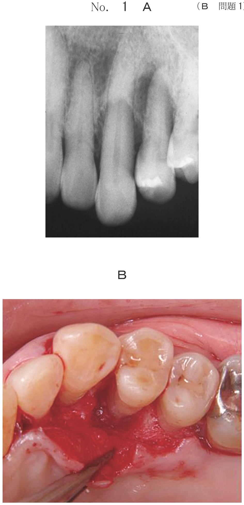

Behçet病は、慢性の多臓器侵襲性自己免疫疾患で、口腔粘膜の再発性アフタ、皮膚症状、眼症状、外陰部潰瘍を主症状とする。日本は地中海沿岸・中近東とともに多発地域であり、20〜30歳代に発病が多く、男性にやや多い。
原因は不明だが、熱ショックタンパク質に対する自己免疫反応が有力と考えられている。遺伝的背景としてHLA-B51が高頻度に認められ、Tリンパ球の過剰反応による好中球機能亢進がさまざまな症状をきたすとされる。
疾患の初期に出現し、しばしば寛解・再燃を繰り返す。
稀に起こる症状で、自然寛解しにくく生命・予後に影響する。積極的治療を必要とする。
発病当初から主症状がすべてそろうことはまれで、経過中に追加的に症状が現れる。
| 病態 | 治療 |
|---|---|
| 再発性アフタ（局所） | 副腎皮質ステロイド含有軟膏 |
| 皮膚症状など軽度 | コルヒチン |
| 臓器病変・重篤な眼病変 | 高用量副腎皮質ステロイド薬、シクロスポリン |
Behcet病の主症状はどれか。4つ選べ。
【解説】Behçet病の4主徴は、①口腔粘膜の再発性アフタ性潰瘍、②外陰部潰瘍、③ぶどう膜炎（眼症状）、④皮膚症状（結節性紅斑、毛嚢様皮疹など）。色素性母斑はほくろの一種でBehçet病とは無関係。
62歳の男性。口腔内の疼痛を主訴として来院した。2年前から時々口の中がしみることがあったが2週ほどで自然に治るため放置していた。今回は4週前から症状が出たが治らないという。最近の薬物服用歴はない。病変部に硬結はなく、周囲粘膜をこすっても異常は認められない。同時に前腕部の皮膚に異常が発生した。初診時の口腔内写真（別冊No.5A）と前腕部の写真（別冊No.5B）とを別に示す。
精査すべきなのはどれか。2つ選べ。

【解説】再発性の口腔アフタ（2年前から繰り返す）＋前腕部の皮膚症状からBehçet病を疑う。確定診断のためには残りの主症状である外陰部潰瘍とぶどう膜炎（眼症状）を精査する必要がある。誤嚥性肺炎・潰瘍性大腸炎・逆流性食道炎はBehçet病の主症状ではない。